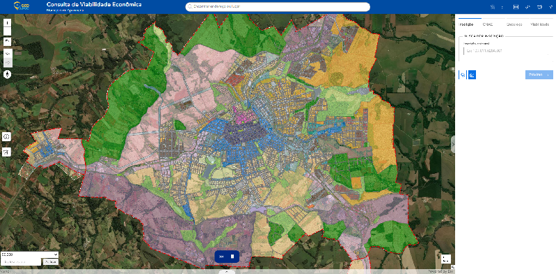
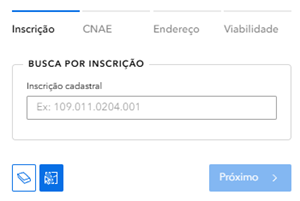
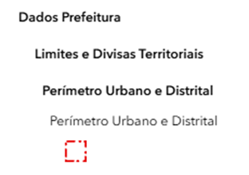
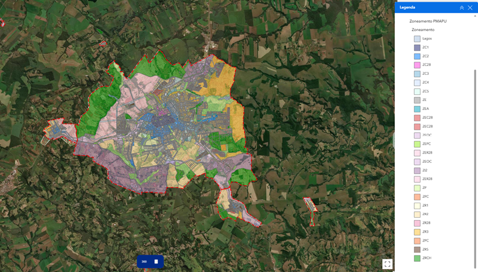
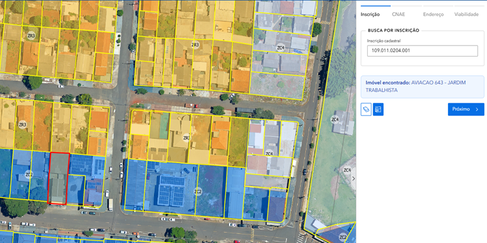
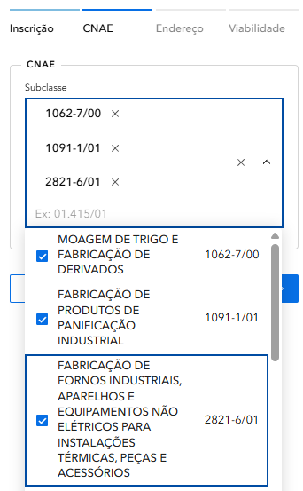
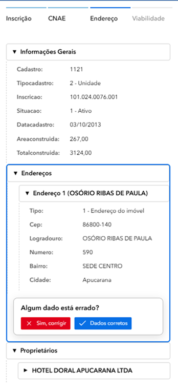
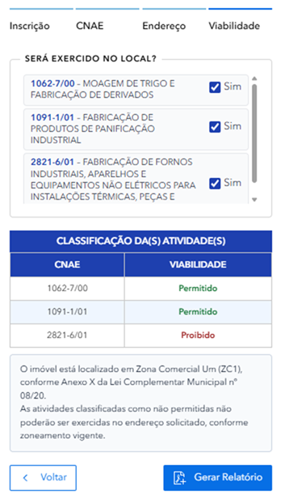
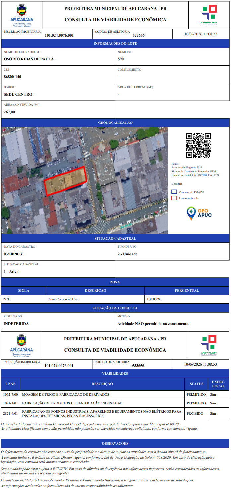

🎯 Introdução
Bem-vindo ao tutorial da aplicação Consulta de Viabilidade Econômica! Esta ferramenta foi desenvolvida para ajudar você a consultar informações sobre terrenos e avaliar a viabilidade econômica de empreendimentos no município de Apucarana.
O que você vai aprender:
- Como acessar e navegar na aplicação
- Entender o mapa interativo e suas legendas
- Conhecer os diferentes zoneamentos
- Realizar buscas por inscrição cadastral
- Interpretar as informações de viabilidade e relatórios gerados
🖥️ A Interface
1️⃣ O Mapa Interativo Central
A parte central da tela mostra um mapa do município de Apucarana com a localização dos lotes, zoneamentos e áreas de interesse.

Mapa interativo do município de Apucarana
2️⃣ O Painel Lateral Direito
À direita, você encontra as abas de consulta com as seguintes opções:
- Inscrição: Busca por inscrição cadastral do lote
- CNAE: Atividades econômicas permitidas
- Endereço: Busca por localização
- Viabilidade: Análise de viabilidade econômica

Painel lateral direito com abas de consulta
3️⃣ Controles do Mapa
À esquerda do mapa, você encontra os botões de controle:
- +/- Zoom in e zoom out
- 🏠 Voltar para a visão inicial
- ⬅️➡️ Navegar entre visualizações anteriores
- ⬆️ Bússola / orientação do mapa
- ℹ️ Exibe detalhes sobre os atributos de uma camada
- 🗑️ Limpar seleção
4️⃣ Barra Superior
Na parte superior da tela você encontra:
- Logo GeoAPUC e título da aplicação
- Barra de busca central: "Encontrar endereço ou lugar"
- Ícones no canto direito: camadas, lista, grid, régua, impressora e gráfico
Barra superior da aplicação
🎨 Legendas e Cores
Entenda cada elemento do mapa e o que suas cores representam:
📍 Mapa Cadastral
| Símbolo | Cor | Significado |
|---|---|---|
| 🟨 | Amarelo (#FFFF99) | Lotes - Lotes e propriedades urbanas |
🏛️ Dados da Prefeitura
| Símbolo | Cor | Significado |
|---|---|---|
| 📍 | Azul (#87CEEB) | Lagos - Corpos de água e reservatórios |
| ❌ | Vermelho (tracejado) | Perímetro Urbano e Distrital |

Legenda completa do mapa
📊 Zoneamento - Tipos de Uso
O zoneamento define o tipo de atividade permitida em cada área.
🏘️ Zoneamento Residencial (ZR)
| Zona | Descrição |
|---|---|
| ZR1 | I - Zona Residencial Um – zona predominantemente residencial |
| ZR2 | II - Zona Residencial Dois – zona predominantemente residencial |
| ZR3 | III - Zona Residencial Três – zona predominantemente residencial, com maior permissividade de atividades de comércio e serviços |
| ZR4 | IV - Zona Residencial Quatro – zona residencial onde se localizam os núcleos e conjuntos habitacionais |
| ZR5 | V - Zona Residencial Cinco – zona predominantemente residencial |
| ZR28 | VI - Zona Residencial do Vinte e Oito – zona predominantemente residencial que compreende os lotes pertencentes à região denominada 28 de janeiro |
| ZRCH | VII - Zona Residencial de Chácaras – zona predominantemente residencial |
| ZOC | VIII - Zona de Ocupação Controlada – área de interesse para fins do abastecimento hídrico, respeitando os critérios aplicáveis |
💼 Zonas ou Eixos de Comércio e Serviços (ZC)
| Zona | Descrição |
|---|---|
| ZC1 | I - Zona Comercial Um – zona central predominantemente com usos comerciais e serviços centrais e com número livre de pavimentos nos edifícios |
| ZC2 | II - Zona Comercial Dois – zona central predominantemente com usos comerciais e serviços centrais; na sede, encontra-se predominantemente na zona de transição entre o centro e os bairros a sul; nos distritos de Pirapó e Vila Reis está presente na área central |
| ZC3 | III - Zona Comercial Três – zona central com usos comerciais e serviços centrais; na sede localizada na região da Barra Funda e Avenida Minas Gerais; nos distritos atua como zona de transição entre zonas industriais e residenciais |
| ZC4 | IV - Zona Comercial Quatro – zona de comércio e serviços de escala local, com edifícios e até 3 (três) pavimentos |
| ZC5 | V - Zona Comercial Cinco – zona de comércio e serviços, localizada no entorno do Lago Jaboti |
| ZC28 | VI - Zona Comercial do Vinte e Oito – zona predominantemente de comércio e serviços que compreende os lotes pertencentes à região denominada 28 de janeiro |
🏭 Zonas Industriais (ZI)
| Zona | Descrição |
|---|---|
| ZI1 | I - Zona Industrial 1 – destinadas às atividades industriais incômodas, não nocivas ou perigosas, de baixo impacto ambiental |
| ZI2 | II - Zona Industrial 2 – destinadas às atividades industriais incômodas ou nocivas, de maior porte e maior impacto ambiental |
✳️ Zonas de Caráter Especial (ZE e correlatas)
| Zona | Descrição |
|---|---|
| ZE | I - Zona Especial: área de domínio público municipal, estadual ou federal, com critérios de ocupação do solo e atividades específicas, a serem definidas pelo órgão municipal responsável |
| ZEPC | II - Zona Especial de Praças e Canteiros – praças e canteiros municipais não edificáveis |
| ZEA | III - Zona Especial de Adensamento - zonas próximas aos campi universitários do município, visando suprir demanda por habitação e atividades complementares |
| ZEIS | IV - Zona Especial de Interesse Social – áreas destinadas aos programas sociais do governo ou município, visando a regularização fundiária e o provimento de novas habitações de interesse social |
| ZEVR | V - Zona Especial de Vilas Rurais – loteamentos residenciais, com características específicas, implantados através do Programa "Vila Rural" |
| ZP | VI - Zona de Preservação Ambiental – espaço territorial regido pela legislação ambiental, incluindo parques, reservas, APPs e áreas de proteção ambiental |

Mapa com todos os zoneamentos
🔍 Como Buscar um Lote
Use a Barra de Busca Superior
Na parte superior, há uma barra de busca onde você pode digitar endereço ou lugar.
Barra de busca superior
Busque por Inscrição Cadastral
No painel lateral direito, clique na aba "Inscrição" e digite o número no campo indicado.
O formato da inscrição é:
109.011.0204.001 ou 103.068.0123.001
Clique em "Próximo"
Após digitar a inscrição 101.024.0076.001 o imóvel foi encontrado na Rua Osório Ribas de Paula, 590 – sede centro, clique no botão "Próximo >" para avançar.
Visualize o Resultado
O mapa irá centralizar no lote encontrado e exibirá as informações no painel direito.

Resultado da busca no mapa
Informações da Inscrição
Após clicar em "Próximo", você verá a classificação da atividade e sua viabilidade. Vamos escolher um tipo de serviço que pretende-se investigar a viabilidade de implantação de acordo com o zoneamento da cidade.
Para esse exemplo, vamos escolher mais de uma opção porque pretende-se exercer várias atividades dentro do mesmo ramo "padaria".
🎯 Classificação de Atividades

Classificação das atividades
6️⃣ Validação do Endereço
É necessário realizar um check-in para validação do endereço. Caso as informações estejam corretas, clique em "Dados corretos".

Validação do Endereço
Neste momento, o sistema realiza uma análise espacial para verificar a permissibilidade da atividade no local informado, considerando os parâmetros urbanísticos vigentes e as disposições estabelecidas pelo Plano Diretor Municipal.
Como foram selecionados três CNAEs para o estabelecimento, o sistema processa as informações e apresenta ao usuário o resultado da análise, indicando a situação de cada atividade em relação à permissibilidade de uso e ocupação do solo.
7️⃣ Análise Espacial

Resultado da análise de permissibilidade de uso
De acordo com a análise realizada com base no zoneamento municipal vigente, é permitido o exercício das seguintes atividades no endereço informado:
- 1062-7/00 – Moagem de trigo e fabricação de derivados
- 1091-1/01 – Fabricação de produtos de panificação industrial
Entretanto, para a atividade:
- 2821-6/01 – Fabricação de fornos industriais, aparelhos e equipamentos não elétricos para instalações térmicas, peças e acessórios
o resultado da análise indica que não é permitido o seu exercício no local informado.
Clique em "Gerar Relatório".
📄 Relatório de Viabilidade
Após completar a consulta, um relatório de viabilidade será gerado.

Relatório de viabilidade gerado com sucesso!
💼 Casos Práticos
Caso 1: Encontrar Lote para Comércio
Objetivo: Buscar lotes em zona comercial ou especializada.
Passos:
- Na legenda, identifique as zonas comerciais: ZEC28, ZEOC e ZPC
- O mapa mostrará as áreas correspondentes nas cores indicadas
- Use a barra de busca para encontrar endereços nessas zonas
- Clique no lote para ver a inscrição e viabilidade
Caso 2: Verificar Zoneamento de um Endereço
Objetivo: Saber qual é o zoneamento de um lote específico.
Passos:
- Busque o endereço na barra de busca superior
- O mapa vai centralizar no local
- Verifique a cor da área no mapa
- Consulte a tabela de zoneamento para entender as regras
Caso 3: Identificar Propriedade pelo Cadastro
Objetivo: Localizar um lote usando sua inscrição cadastral.
Passos:
- No painel direito, clique na aba "Inscrição"
- Digite a inscrição:
109.011.0204.001 - Clique em "Próximo >"
- O mapa vai centralizar no lote e exibir todos os dados
❓ FAQ - Perguntas Frequentes
Como saber a viabilidade econômica de um lote?
Após buscar o lote, clique na aba "Viabilidade" no painel direito. Lá você encontrará informações sobre a viabilidade econômica do empreendimento.
O que é CNAE?
CNAE (Classificação Nacional de Atividades Econômicas) indica que tipo de atividades econômicas são permitidas naquele lote. Exemplo: comércio, serviços, indústria.
Os dados são atualizados?
Sim, os dados são atualizados conforme novas informações são registradas na prefeitura.
Posso usar esse mapa como prova legal?
Este mapa é informativo. Para questões legais e documentos oficiais, procure a Idepplan - Instituto de Desenvolvimento, Pesquisa e Planejamento de Apucarana.
A aplicação funciona em celular?
Sim! A aplicação é responsiva e funciona bem em smartphones e tablets. Acesse pelo navegador do seu dispositivo.
Encontrei um erro nos dados. Como reportar?
Entre em contato com a Idepplan - Prefeitura de Apucarana através do email: idepplan@apucarana.pv.gov.br
📚 Glossário
Abaixo estão os principais termos usados ao longo do tutorial, com definições rápidas para facilitar a consulta.
| Termo | Definição |
|---|---|
| CNAE | Classificação Nacional de Atividades Econômicas. Identifica o tipo de atividade econômica permitida ou declarada no local. |
| Zoneamento | Divisão do território urbano em zonas com regras específicas de uso e ocupação do solo. |
| Viabilidade | Avaliação que indica se o uso pretendido é permitido, tolerado ou proibido para um lote. |
| Lote | Parcela de terreno individualizada no cadastro municipal, normalmente associada a uma inscrição cadastral. |
| Inscrição Cadastral | Código identificador do imóvel no cadastro técnico da Prefeitura, usado para localizar o lote no sistema. |